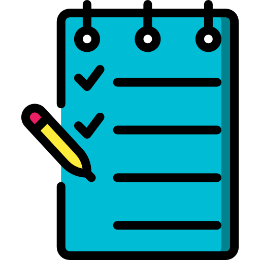

1-я страница | 2-я страница | 3-я страница | 4-я страница | 5-я страница | 6-я страница | 7-я страница | Домашняя
ПРОГРАММА КУРСА «ФОТО-ГУРУ»
Перечень тем
 Тема / Срок:
 ЗАНЯТИЕ 1. –
Введение и знакомство
ЗАНЯТИЕ 1. –
Введение и знакомство
[до 25.09.2023]
ЗАНЯТИЕ 2. –
Теория фотографии
[до 15.10.2023]
ЗАНЯТИЕ 3. –
Электронна фотография
[до 05.11.2023]
ЗАНЯТИЕ 4. –
Практика фотографирования объектов
[до 25.11.2023]
ЗАНЯТИЕ 5. –
Сборка фотоальбома
[до 15.12.2023]
| ПЕРЕЧЕНЬ ТЕМ | |
|---|---|
| Занятие | Описание |
| Введение и знакомство |
|
| Теория фотографирования |
|
| Электронна фотография и настройка камеры |
|
| Практика фотографирования объектов |
|
| Портретная фотография и создание фотоальбома |
|
ОПИСАНИЕ ЗАНЯТИЙ
Занятие 1. Введение и знакомство
- Знакомство с учащимися и обсуждение их фотоаппаратуры.
- Осмотр и обсуждение аппаратуры учащихся.
- Консультации.
- Знакомство с программой курса.
- Обсуждение мастеров фотографии.
- Современная фотография.
Занятие 2. Теория фотографирования
- Как возникает фотографическое изображение.
- Разбор процесса создания фотографического изображения.
- Основные принципы фотографии и устройство фотоаппарата.
- Изучение затвора и современных цифровых фотоаппаратов.
- Матрицы фотоаппаратов и их влияние на изображение.
- Матрицы фотоаппаратов – чем различаются и на что влияют.
- Кроп-фактор.
- Сравнение зеркальных, беззеркальных и компактных камер.
Занятие 3. Электронная фотография
- Изучение экспозиции, включая выдержку, диафрагму и чувствительность.
- Понятие глубины резкости и способы её контроля.
- Практическое управление настройками цифровой камеры.
- Объективы современных фотоаппаратов.
- Устройство объектива.
- Светосила.
- Фокусные расстояния объективов и выбор подходящего объектива.
Занятие 4. Практика фотографирования объектов
- Освоение функций автофокуса и автоэкспозиции.
- Практика фотографирования.
- Управление глубиной резкости, экспозицией и балансом белого.
- Фокусировка цифровой камеры.
- Точки фокусировки.
- Использование режима liveview в зеркальной фотокамере.
- Практикуем размытие фона.
- Съемка предметов и натюрмортов.
Занятие 5. Портретная фотография и создание фотоальбома
- Практические уроки по портретной фотографии.
- Особенности строения человека.
- Достоинства и недостатки – как их скрывать и подчеркивать.
- Освещение в бытовых условиях для портретной съемки.
- Практика портретной фотосъемки.
- Виды сборки фотоальбомов.
- Наилучшие комбинации позиционирования фотографий.